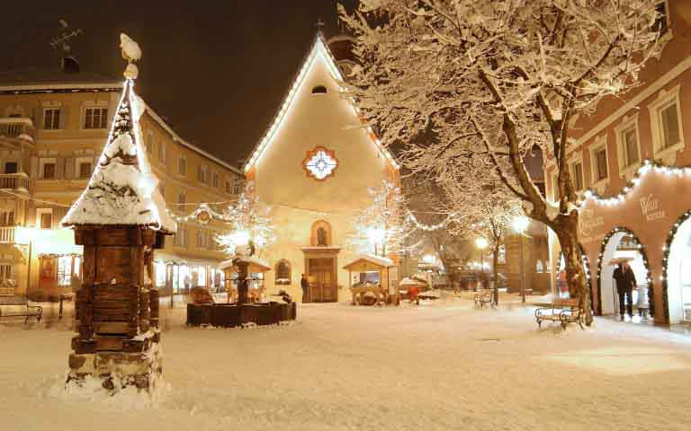
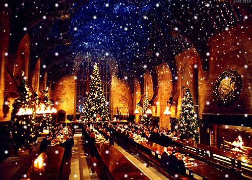
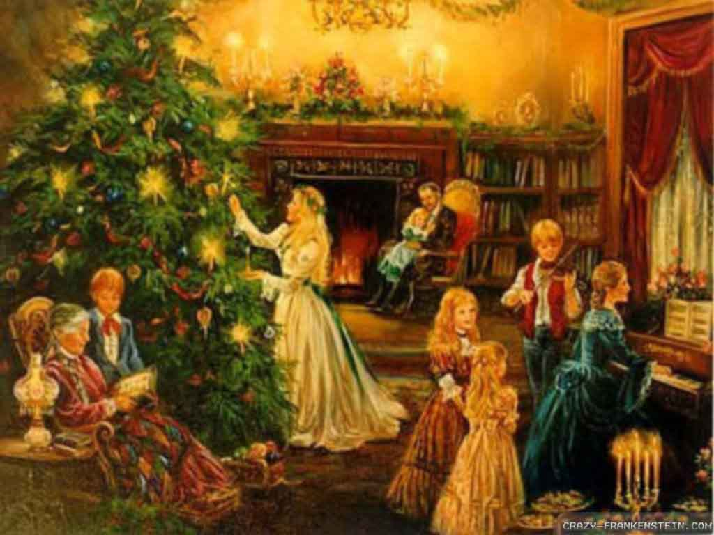

Christmas Day is an annual celebration of the birth of Jesus Christ. The popular customs of celebrating Christmas include gift-giving, sending holiday cards, Christmas trees and light, caroling, a feast and church celebrations. Interesting Christmas Facts: The word Christams originates from the words Christ's Mass. However, there are many different traditions and theories as to why Christams is celebrated on December 25th.
An Ancient Holiday
The middle of winter has long been a time of celebration around the world. Centuries before the arrival of the man
called Jesus, early Europeans celebrated light and birth in the darkest days of winter. Many
peoples rejoiced during the winter solstice, when the worst of the winter was behind them and they could look forward to longer
days and extended hours of sunlight.

In Scandinavia, the Norse celebrated Yule from December 21, the winter solstice, through January. In recognition of the return of the sun, fathers and sons would bring home large logs, which they would feast untill the log burned out, which could take as many as 12 days. The Norse believed that each spark from the fire represented a new pig or calf that would be born during the coming year. The end of December was a perfect time for celebration in most areas of Europe. At that time of year, most cattle were slaughtered so they would not have to be fed during the winter. For many, it was the only time of year when they had a supply of fresh meat. In addition, most wine and beer made during the year was finally fermented and ready for drinking.In Germany, people honored the pagan god Oden during the mid-winter holiday. Germans were terrified of Oden, as they believed he made nocturnal flights through the sky to observe his people, and then decide who would prosper or perish. Because of his presence, many people chose to stay inside.
Saturnalia
In Rome, where winters were not as harsh as those in the far north, Saturnalia- a holiday in
honor of Saturn, the god of agriculture- was celebrated. Begining in the week leading up to the winter solstice and continuing
for a full month, Saturnalia was a hedonistic time, when food and drink were plentiful and the
normal Roman social order was turned upside down. For a month, slaves would become masters. Peasants were in command of the
city. Business and schools were closed so that everyone could join in the fun.

Also around the time of the winter solstice, Romans observed Juvenalia, a feast honoring the children of Rome. In addition, members of the upper classes often celebrated the birthday of Mithra, the god of the unconquerable sun, on December 25. It was believed that Mithra, an infant god, was born of a rock. For some Romans, Mithra's birthday was the most sacred day of the year.In the early years of Christianity, Easter was the main holiday; the birth of Jesus was not celebrated. In the fourth century, church officials decided to institute the birth of Jesus as a holiday. Unfortunately, the Bible does not mention date for his birth (a fact Puritans later pointed out in order to deny the legitimacy of the celebration). Although some evdence suggests that his birth may have occurred in the spring (why would shepherds be herding in the middle of winter?), Pope Julius 1 chose December 25. It is commonly believed that the church chose this date in an effort to adopt and absorb the traditions of the pagan Saturnalia festival. First called the Feast of the Nativity, the custom spread to Egypt by 432 and to England by the end of the sixth century. By the end of the eighth century, the celebration of Christmas had spread all the way to Scandinavia. Today, in the Greek and Russian orthodox churches, Christmas is celebrated 13 days after the 25th, which is also referred to as the Epiphany or Three Kings Day. This is the day it is believed that three wise men finally found Jesus in the manger.
By holding Christmas at the same time as traditional winter solstice festivals, church leaders increased the chances that Christmas would be popularly embraced, but gave up the ability to dictate how it was celebrate. By the Middle Ages, Christianity had, for the most part, replaced pagan religion. On Christmas, believers attended church, then celebrated raucously in a drunken, carnival-like atmosphere similar to today's Mardi Gras. Each year, a beggar or student would be crowned the "lord of misrule" and eager celebrants played the part of his subjects. The poor would go to the houses of the rich and demend their best food and drink. If owners failed to comply, their visitors would most likely terrorize them with mischief. Christmas became the time of year when the upper classes could repay their real or imagined "debt" to society by entertaining less fortunate citizens.
An Outlaw Christmas
In the early 17th century, a wave of religious reform changed the way Christmas was celebrated in Europe
. When Oliver Cromwell and his Puritan forces took over England in
1645, they vowed to rid England of decadence and, as part of their effort, cancelled Christmas. By popular demand,
Charles 2 was restored to the throne and, with him, came the return of the popular holiday.
The pilgrims, English separatists that came to America in 1620, were even more orthodox in
their Puritan beliefs than Cromwell. As a result, Christmas was not a holiday in early America.
From 1659 to 1681, the celebration of Christmas was actually
outlawed in Boston. Anyone exhibiting the Christmas spirit was fined five shillings. By contrast,
Captain John Smith reported that Christmas was enjoyed by all and passed without incident.
After the American Revolution, English customs fell out of favor, including Christmas. In fact,
Christmas wasn't declared a federal holiday until June 26, 1870.
Irving Reinvents Christmas
It wasn't until the 19th century that Americans began to embrace Christmas. Americans re-invented Christmas, and
changed it from a raucous carnival holiday into a family-centeref day of peace and nostalgia. But what about the 1800s
peaked American interest in the holiday.
The early 19th century was a period of class conflict and turmoil. During this time, unemployment was high and gang rioting by the disenchanted classes often occured during the Christmas season. In 1828, the New York city council instituted the city's first police force in response to a Christmas riot. This catalyzed certain members of the upper classes to begin to change the way Christmas was celebrated in America.
In 1819, best-selling author Washington Irving wrote The Sketchbook of Geoffrey Crayon, gent., a series of stories about the celebration of Christmas in an English manor house. The sketches feature a squire who invited the peasants into his home for the holiday. In contrast to the problems faced in American society, the two groups mingled effortlessly. In Irving's mind, Christmas should be a peaceful, warm-hearted holiday bringing groups together across lines of wealth or social status. Irving's fictitious celebrants enjoyed "ancient customs", including the crowning of a Lord of Misrule. Irving's book, however, was not based on any holiday celebration he had attended - in fact, many historians say that Irving's account actually "invented" tradition by implying that it described the true customs of the season.
A Christmas Carol
Also around this time, English author Charles Dickens created the classic holiday
tale, A Christmas Carol. The story's message- the importance of charity and good will towards all
humankind-struck a powerful chord in the United States and England
and showed members of Victorian society the benefits of celebrating the holiday.

The family was also becoming less disciplined and more sensitive to the emotional needs of children during the early 1800s. Christmas provided families with a day when they could lavish attention- and gifts- on their children without appearing to " spoil" them. As Americans began to embrace Christmas as a perfect family holiday, old customs were unearthed. People looked toward recent immigrants and Catholic and Episcopalian churches to see how the day should be celebrated. In the next 100 years, Americans built a Christmas tradition all their own that included pieces of many other customs, including decorating trees, sending holiday cards and gift-giving. Although most families quickly bought into the idea that they were celebrating Christmas how it had been done for centuries, Americans had really re-invented a holiday to fill the cultural needs of a growing nation.
Christmas Facts
Each year, 30-35 million real Christmas trees are sold in the
United States alone. There are 21,000 Christmas tree growers in the
United States, and trees usually grow for about 15 years before they are
sold. Today, in the Greek and Russian orthodox churches, Christmas is
celebrated 13 days after the 25th, which is also referred to as the
Epiphany or Three Kings Day. This is the day it is believed that the
three wise men finally found Jesus in the manger. In the Middle Ages,
Christmas celebrations were rowdy and raucous- a lot like today's Mardi Gras parties.
From 1659 to 1681, the celebration of Christmas was outlawed in Boston, and law-breakers were fined five shillings. Christmas was declred a federal holiday in the United States on June 26, 1870. The first eggnog made in the United States was consumed in Captain Jhon Smith's 1607 Jamestown settlement. Poinsettia plants are named after Joel R. Poinsett, an American minister to Mexico, who brought the red and green plant from Mexico to America in 1828. The Salvation Army has been sending Santa Claus- clad donation collectors into the streets since the 1890s. Rudolph, "the most famous reindeer of all", was the product of Robert L.May's imsgination in 1939. The copywrite wrote a poem about the reindeer to help lure customers into the Montgomery Ward department store. Construction workers started the Rockfeller Center Christmas tree tradition in 1931.
Did you know...
Puritans in America tried to make Thanksgiving Day
the most important annual festival instead of Christmas!